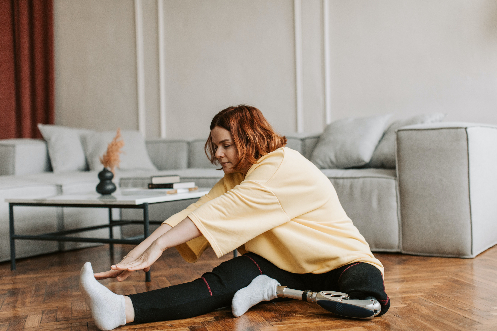

6 Ideias para fazer durante a pandemia
-

-

- 
-

-

1-Aprenda algo novo
Ao longo da vida, reunimos uma lista considerável de novos aprendizados que queremos conquistar — principalmente para serem aplicados na carreira. Aprender inglês ou outros idiomas, aprender novas linguagens de programação,Muitas vezes, esses desejos só se acumulam por falta de espaço na agenda, ou seja, por causa da rotina corrida. Na quarentena, não há mais horas perdidas no trânsito e só aqui já se ganha bastante tempo para aprender algo novo. Que tal começar agora mesmo? Para isso, você pode claro com a ajuda da internet.
2-Planeje eventos via videoconferência
Combine um café da tarde ou jantar à distância com os amigos. Uma festinha com vinho, música de fundo e conversa também é uma alternativa para elevar o humor!
Aliás, sempre temos um amigo, um parente ou pessoas das quais a correria do dia-a-dia acaba nos distanciando, não é mesmo? Então dê uma chance para esta dica e ponha em prática, tenho certeza que tanto você, como o previligiádo(a) à sua escolha também irá amar!
3-Fazer exercícios em casa
Se você acha que não dá para fazer exercícios em casa porque faltam equipamentos, temos uma boa solução. Além das atividades que não precisam deles, como é o caso da ioga, ainda dá para substituir pesos por coisas que você tem: um saco de feijão ou uma garrafa cheia de água, por exemplo.
Existem muitos aplicativos gratuitos que ajudam nessa missão. Eles passam algumas séries de exercícios e você pode acompanhar seu progresso ao longo da semana. Os vídeos também são boas oportunidades de aprender alguns passos e atividades. Só não pegue pesado nos treinos para evitar lesões e fadigas nos músculos, combinado?
4-Criar o hábito de leitura
A leitura é muito importante para a nossa vida e traz benefícios ao cérebro, como:
aprender fatos novos; desenvolver o vocabulário, adicionando a ele novas palavras; melhorar a capacidade de escrever de maneira mais clara; adquirir um senso crítico. Essas vantagens não são somente para as crianças, não! Os adultos têm muito a ganhar com a leitura, tanto na vida pessoal quanto na profissional. Porém, a falta de tempo também é uma pedra no caminho desse hábito.
Agora, com o excesso de tempo livre em nossas casas, é totalmente possível e viável ;D
5-Cinema em casa
O ato de ir as salas de cinema é incomparável, pela atmosfera, pelo cheirinho de pipoca, a expectativa de viver duas horas dentro de um outro mundo de fantasia, ação, suspense, etc. Mas como as salas de cinema estão fechadas, que tal transformar sua sala em uma mini sala de cinema?
Pode assistir sozinho ou em família, pode ter pipoca, bebidas, etc. Pode ser no escuro ou no claro, você decide. Um bom filme, assim como a música, depende de quem está vendo. Já pensou em rever aquele clássico dos anos 80? Tá valendo. A grande vantagem do cinema em casa é que os catálogos de streaming estão cada dia melhores e para todos os gostos.
6-Descanse e relaxe a mente, vai passar!
Está estranhando essa dica? Isso acontece porque o descanso muitas vezes é associado ao tédio e à monotonia, não é mesmo? Mas tenha sempre em mente que o período da quarentena pode exigir bastante de nós no quesito emocional.
dar uma folga ao nosso cérebro. Bombardeá-lo de informações não é o melhor caminho, já que essa prática gera ainda mais estresse. Da mesma forma, evite aquela cobrança consigo mesmo. Se os seus amigos e famosos das redes sociais conseguem ser produtivos e você não, sem problemas! Lembre-se de que cada um tem seu ritmo. Inclusive, vale reforçar que esta lista tem a única intenção de ajudar — e não de colocar mais pressão, combinado?
Aproveite para ser feliz, mesmo que no meio da pandemia e do isolamento social. A única coisa que sabemos, e isso é muito importante, é que vai passar. Vai passar!